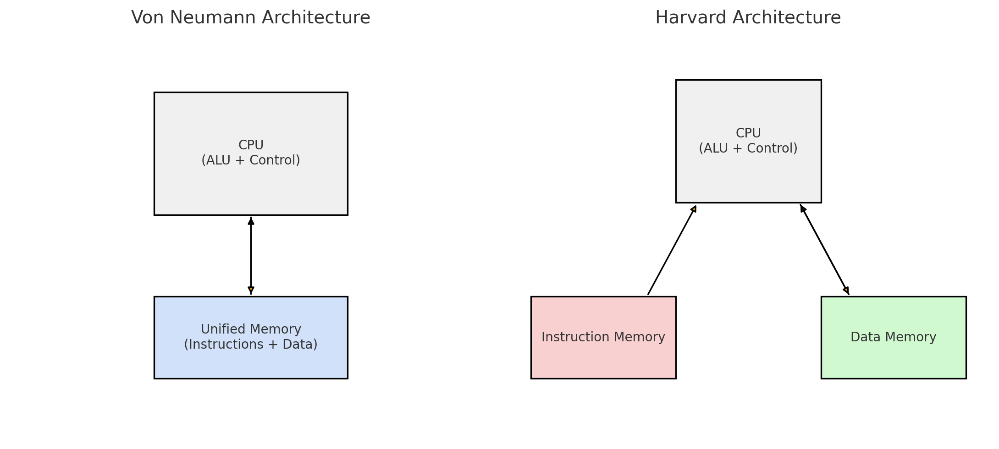

Week 1
Computer Architecture
Computer Architecture: The study of how to design the parts of a computer system visible to programmers, including the instruction set, memory hierarchy, and execution model (e.g., pipelined execution).
Computer organization: Focuses on the internal structure of hardware components like ALUs, registers, and buses.
In practice, both used interchangably.
Studying computer architecture helps us understand:
- code implementation,
- performance optimization,
- concepts such as parallelism, caching, and pipelining,
- tradeoffs between hardware and software design choices
Computers and Programs
A computer executes given instructions (programs) to produce results for the user.
Program Execution
In general, when it comes to executing a given program, there are two methods:
- Translation (compilation)
- Converts a high-level program into a low-level (machine code) version before execution
- Interpretation
- A low-level machine program (the interpreter) reads and executes high-level programs instruction by instruction during runtime.
Program Languages and Levels
A program is a set of instructions written in a high level programming language.
-
Machine Language (low level)
Raw binary code (zeros and ones) executed directly by the CPU. -
Human-Readable Machine Language
Uses mnemonics instead of binary, but still closely tied to hardware.
Each instruction maps directly to machine code. Example: Assembly (1949) -
"Modern" Programming Languages (high level)
Abstract, human-readable languages designed to be portable and easier to write.
Compiled or interpreted into lower-level code. Examples: C (1970), Java (1995), Python (1991), JavaScript (1995)
Multilevel Machines
- Digital Logic Level
- Built from basic logic gates (AND, OR, NOT).
-
These gates form circuits that make up components like CPU and memory.
-
Microarchitecture Level
- Executes instructions using hardware components: ALU, registers, microprograms, memory.
- A microprogram controls how instructions are executed.
-
Represents the actual organization of the CPU at the circuit level.
-
Instruction Set Architecture (ISA) Level
- Defines the set of machine instructions available (e.g.,
LOAD,ADD,STORE). - Independent of how the CPU actually implements them.
-
Analogy: Like a menu in a restaurant — lists the “dishes” (operations) you can order, but not how they’re cooked.
-
Operating System Machine Level
- Main duties: memory management, process execution, and system resource protection.
- Provides abstraction to simplify programming.
- Assembly instructions generally pass through this level unchanged.
-
Some interpretation happens here, as the OS manages low-level execution details.
-
Assembly Language Level
- Human-readable mnemonics (e.g.,
MOV,ADD). - Harder to use — even simple programs require many lines.
-
Translated into machine code by an assembler.
-
Problem-Oriented Language Level (High-Level Languages)
- Includes languages like C, Java, Python.
- Easier for humans to read, write, and maintain.
- Compilers or interpreters convert these programs into assembly/machine code.
Hardware vs Software and Control Units
Anything that can be done with software can also be done with hardware, and vice versa (functionality).
Hardware is generally faster and more expensive.
Control Unit: Microprogrammed vs Hardwired
The Control Unit (CU) generates the control signals that tell the CPU’s datapath (ALU, registers, memory, etc.) what to do when executing instructions.
Microprogrammed Control Unit
- Software-based control: Control signals are stored in a special memory (control memory, often ROM).
- A microprogram is a sequence of microinstructions that generate the necessary control signals.
- Execution = fetching and running these microinstructions in sequence.
- Advantages:
- Easy to modify or extend (new instructions can be added by changing the microprogram).
- Flexible and easier to design.
- Disadvantages:
- Slower than hardwired control, since every instruction is broken into microinstructions that must be fetched and interpreted.
Example (slides):
- Microprogram (P1): LEDs moving to the right.
- Microprogram (P2): LEDs moving to the left.
- Stored in ROM, and switching the program changes the behavior.
Hardwired Control Unit
- Hardware-based control: Control signals are generated directly by fixed logic circuits.
- No control memory — logic gates are wired to decode the opcode and trigger control signals.
- Advantages:
- Much faster (signals generated directly by circuits).
- Disadvantages:
- Inflexible — changing the instruction set requires redesigning the hardware.
- More complex design as instruction sets grow.
Comparison Table
| Aspect | Microprogrammed CU | Hardwired CU |
|---|---|---|
| Implementation | Control memory + microinstructions | Fixed logic circuits |
| Flexibility | Easy to modify, new instructions easy | Difficult to change |
| Speed | Slower (extra step: microinstruction) | Faster (direct hardware) |
| Complexity | Simpler design | More complex for large ISAs |
Historical Context
- Early computers: Direct hardwired execution.
- Mid-generation: Microprogramming introduced to simplify control of complex instruction sets.
- Modern trend: Moving back toward hardwired (or simplified ISAs) because microprogramming slows down execution.
Computer Architecture
Computer Generations
- Zeroth Generation (1642 – 1945): Mechanical Computers (e.g., Pascal's calculator).
- First Generation (1945 – 1955): Vacuum Tubes (e.g., ENIAC – large, power-hungry, first electronic general-purpose computer). * Von Neumann Architecture (1945): Both data and program stored in memory (still the basis for most digital computers).
- Second Generation (1955 – 1965): Transistors (e.g., IBM 7094, PDP-8 with a single bus/omnibus). Smaller, faster, cheaper.
- Third Generation (1965 – 1980): Integrated Circuits (IC) (e.g., IBM 360). Dozens of transistors on a single chip, leading to even smaller, faster, and cheaper computers.
- Fourth Generation (1980 – ?): Very Large Scale Integration (VLSI) (e.g., Intel CPUs). Millions of transistors on a single chip.
Harvard vs. Von Neumann Architecture
- Harvard Architecture:
- Separate memory for data and code.
- Two separate data paths for instructions and data.
- Faster (can access instructions and data simultaneously).
- Used in microcontrollers, DSPs.
- More complex design.
- Von Neumann Architecture:
- Shared memory for data and code.
- One shared data path for both.
- Slower (one access at a time).
- Used in general-purpose computers (PCs, laptops).
- Simpler design.
